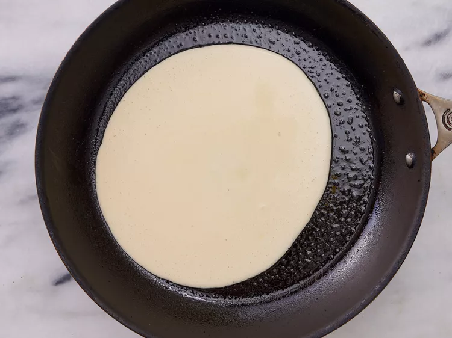

Crepe

This strawberry crepe recipe has been a family favorite for over 30 years! These crepes are delicious and very rich! Be sure you have at least 1 hour to prepare them; they are worth every minute!
What is a Crepe
Crepes are French-style pancakes that are thin and flat, and can be made and filled with sweet or savory ingredients.
We love them filled with nutella and strawberries or bananas, or a sweet cream filling with fruit, like in this recipe.
If you’re wanting to make them even more elegant, try these Blintzes.
If you want a savory crepe you can leave out the vanilla and some of the sugar and fill them with a creamy chicken mixture or even eggs and ham for a breakfast crepe.
Crepes are different from American pancakes because they don’t have a rising agent in them (like baking soda or baking powder) so they turn out wafer thin and delicate, rather than thick and fluffy.
ingredients
- ¾ cup all-purpose flour
- ½ cup milk
- ½ cup water
- 3 eggs
- 3 tablespoons butter, melted
- ½ teaspoon salt
- 1 ¼ cups sifted confectioners' sugar
- 1 (8 ounce) package cream cheese, softened
- 1 tablespoon lemon juice
- 1 teaspoon lemon zest
- ½ teaspoon vanilla extract
- 1 cup heavy cream, whipped
- 4 cups sliced strawberries
Steps
Step 1
Gather all ingredients.
Step 2
Place flour, milk, water, eggs, melted butter, and salt into a blender; blend until smooth and set aside.
Step 3
Beat confectioners' sugar, cream cheese, lemon juice, lemon zest, and vanilla with an electric mixer in a large bowl until smooth.
Step 4
Gently fold in whipped cream.
Step 5
Heat a lightly oiled griddle or non-stick skillet over medium heat. Pour or scoop batter onto the griddle, using approximately 2 tablespoons for each crepe.
Step 6
Tip and rotate the pan to spread batter as thinly as possible.
Step 7
Flip over when batter is set and edges begin to brown. Continue cooking until bottom begins to brown. Stack finished crepes on a plate; cover with a damp towel.
Step 8
Fill each crepe with 1/4 cup sliced strawberries and 1/3 cup cream cheese filling.

Step 9
Roll up and top with a dollop of cream cheese filling and more sliced strawberries.